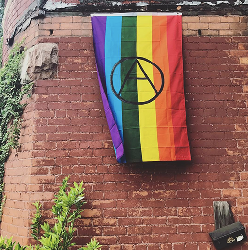
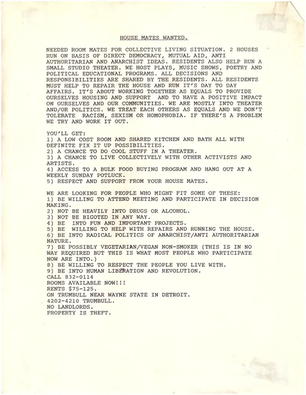

Trumbullplex
The Embodiment of a Dream Space
"If voting changed anything it would be illegal."
-Written on a wall in San Francisco
The Trumbullplex is a special ongoing project oriented towards youth and culture. It is a Detroit housing and living arts project formed in 1993 that came out of a particular anarchist collectivist political perspective.
All of the occupants of the Trumbullplex are the owners of the spaces both in practice and legally. It is similar to a co-op or commune situation, with the addition of an on-site cultural activity center coordinated by its young residents on a shoestring budget.
Today the Trumbullplex is a BIPOC-led artist space and quite different than 30 years ago. The Trumbullplex is as important now than ever before when it comes to creating a better world.
I lived there and was involved throughout the 2000’s. My project is NOT directly a part of the current Trumbullplex resident’s programming. Check out @trumbullplex on Instagram to see what they are up to and consider sending them some love.
While the founding organizers were often identified as artists, activists, punks, and queers, they were as likely to refuse any labels. Though most people thought they were just weird, they were in fact pushing for the opportunity to shape their own lives (within the increasingly disturbing conditions under Capitalism), and were rather intentional in how they were going to manage the whole project. There were rules or guidelines and a mission statement created.
Picture a group of young people who are really tired of hearing how important it is to vote for one of two parties that have done a shit job of leading. They decided they weren’t going to sit around and wait for someone else to make things better and seized upon an opportunity to own two large Victorian houses and an attached space known as “the theatre”. Using these shared resources they wanted to build a sense of community, support each other, and make a positive impact with their own actions.
From there the revolving door of like-minded folks coming and going was spinning faster than shoppers at a black Friday sale giving away free media devices. No doubt it certainly has been a great cast of characters involved, with a lot of ups and downs, but also speaks to lessons learned along the way.
These interviews are a significant source for my writing in the book I’ll be calling The Trumbullplex is On Fire, which will be a collective history of The Trumbullplex and the many generations of people who made it what it is and was. My intention has always been to set off down this path, see what twists and turns arose and try to stay the course towards creating a tangible book object, while staying open to some meandering. This is the anarchist way, I suppose. To say something significant about the Trumbullplex community, if it were not a group effort, would be of little value to humanity, so I volunteered (when no one was asking) to try and interview everyone I could. My interviews began in 2022 during the exciting, still transitional phase of the Trumbullplex into a space now led by and serving People of Color. Unless noted, all interviews were conducted by yours truly, HoneA.
I actually felt called to this work while simultaneously laughing aloud at the notion. So much had changed in my own personal life and with all its dysfunction could I actually track down the past residents to collaborate on the telling of our collective history? The answer turned out to be thus far, yes. Interview participants partnered with me as a gesture of good will and allowed for most of the content of our interviews to be used towards my efforts to uncover, and turn the pages of a communal story. This was a gift most appreciated and though many were very eager, there were those who understandably, were hesitant. If you yourself are interested in adding to your interview or have not interviewed yet, I would be grateful to hear from you. You need not have been a resident to have a story related to the Trumbullplex.
I am not a professional sociologist or professional anything and will not take kindly to those who are unkind. I did my best to respect and care for each person's willingness to become vulnerable with me in the telling of their story. Having said that, I am up for reflections on how I may have missed important cues or opportunities in my process and how I can do better as I continue. The Trumbullplex or “X-Plex” Community story is still being written by me, by you and all those yet to discover it. And though it will never truly be complete, it’s invaluable to continue to share our experiences, our culture within this fractured world.
I intend to carry on this work even after The Trumbullplex Is On Fire has been published and should be considered an equal to the effort to share our collective history. I would greatly appreciate your support in suggesting to others they check it out and in the other ways I have indicated on this site. Your support matters! Thank you to all who’ve participated thus far!
-Jhon Clark
While this archive will have some overlap with other sections of the site that also has archival flyers, photos and ephemera such as in the upsidedownculture section The Trumbullplex’s history has a home here. It is made up of images and stories that I hope help tell the story from many points of view and eventually draws from more than my own collections of images and The Fanning the Flames interviews.
The interviews I began in 2022 are the centerpiece of this website and the “Fanning the Flames” project. They are conducted in various settings with myself and the interviewee agreeing to the terms before hand, ie. they may agree to the interview if they have final sign off or certain topics are avoided etc. My goal is to try and interview everyone who ever lived at the Trumbullplex as well as others who have an association with the Trumbullplex, such as neighbors etc. They are long because for the most part the interviews are unedited, having said that I hope you stick with it and read them in their entirety. There is a lot of incite, wisdom or interesting perspectives contained within these interviews of people who have participated in the creation of a community and helped shape the culture and people of a city.
Interviews Archive
I love flyer art and the Trumbullplex has had so many exceptional examples of awesome flyers by so many great and often unknown artists! If you would like me to share which ones are yours I will certainly try! Though I am not making any promises it will happen in a timely manner, since there’s just so many to try and archive! Thanks for your understanding.
The Trumbullplex flyers here will initially draw from my personal archive, and are loosely in chronological order…PLEASE, if you have any from any era that you do not see here email upsidedownculture@gmail.com, along with any details you may have regarding who booked the event, who made the flyer, etc. Thanks!
FLYERS!
If you are here to look at flyers because you are a flyer art enthusiast, could you sum up why in a sentence or two, that is, why you love flyers? I’m looking back at some of the flyers I have saved, now in stacks of thick 3 ring binders and the floodgates are opening. I recall meeting up with friends, staying up late cutting out images from textbooks or at the last minute filling in forgotten pertinent information by hand at the copy shop just before printing them. There’s just a lot of shit that is coming up! I am considering why certain ones are my favorites and I am feeling like this is going to be challenging to keep my thoughts about flyers brief!
From the printing aspect and thinking about Kinkos, scams, copy hook-ups or the personal opinions as to what makes a good, bad or great flyer… is there even such a thing ? I am even feeling a loss for certain flyers I wish I had or it would be cool to have; ‘for goodness sakes’ as my granny would say!
There sure is a lot that can be said about something despite it often being so crude and basic regarding aesthetic tastes, methods, appropriation of images, graphic design vs. art and the wondrous melding of the two. Subtle or attention grabbing works of art, shocking and transgressive or basic and gets the job done, also I think… “damn, I sure have put up a lot of flyers”, so there’s that too.
Wow. The world of flyers is vast, and in the digital age, I feel like something has been lost. I question my own nostalgia though for the good old cut-and-paste methods and the transition to cutting stencils and using aerosol spray cans. Still, I appreciate today's style and the humor I see in flyers. It's not like when I would make a flyer in the van on the way to the next gig for that gig (I’m sure a romantic image ala Black Flag was in my mind), but I suppose even more can be done digitally in that situation, huh.
I guess I don’t actually really have anything concrete to say here more than I really hope you enjoy my collections and long live the actual paper (or some paper like object) flyer!
Flyers Archive
Here’s a few photos from my collection and will eventually get permission to add lots more. IF you have good photos you would like to share I would love to have a look at them. I am treating band photos differently than candid shots of people’s faces and will seek permission for the latter.
Photos Archive